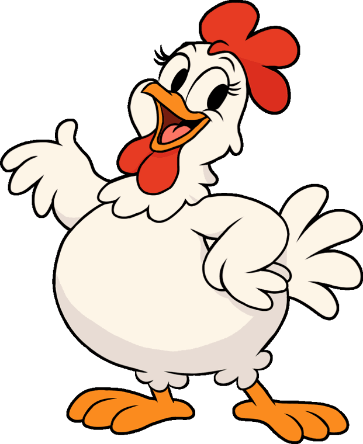
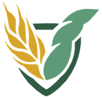
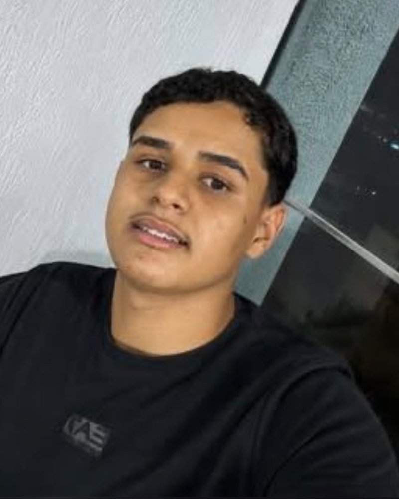

Infância que merece cuidado
Contribuímos para que crianças acolhidas por creches e instituições tenham acesso a uma alimentação adequada e digna.
Creches, orfanatos e instituições de acolhimento infantil.Doações de alimentos entre instituições
O Grão a Grão organiza, acompanha e reconhece doações de alimentos com transparência, rastreabilidade e segurança.
Quem doa precisa saber que o alimento chegou, garantindo confiança entre os doadores e a instituição.
Quem recebe precisa poder comprovar, proporcionando mais segurança e responsabilidade no processo.
Um registro comum guarda essa história, mesmo quando as equipes mudam, e reconhecer quem contribui faz a rede continuar.
Cada geração merece uma mesa cheia.
Contribuímos para que crianças acolhidas por creches e instituições tenham acesso a uma alimentação adequada e digna.
Creches, orfanatos e instituições de acolhimento infantil.Fortalecemos instituições que acolhem idosos, valorizando o cuidado, a dignidade e o bem-estar em cada refeição.
Lares de idosos e instituições de assistência.Cada contribuição, por menor que seja, forma o todo.
Alimento, colheita e continuidade, no centro da marca.
Reconhece cada contribuição validada na plataforma.
O reconhecimento formal para a instituição.
Do registro ao reconhecimento, em quatro etapas.
A entrega de alimentos é registrada pela instituição.
O registro é conferido e passa a constar no histórico.
A validação gera Grão Verde para a instituição.
O reconhecimento formal “Amigo da ONG”.
Os critérios de validação, pontuação e emissão serão definidos pelo projeto e ainda não estão detalhados nesta página.
Nosso compromisso é fortalecer a rede de solidariedade, garantindo que os alimentos cheguem a instituições que acolhem crianças, idosos e pessoas em situação de vulnerabilidade.
Creches, orfanatos e instituições de acolhimento infantil.
Lares de idosos e instituições de assistência à terceira idade.
A moeda que reconhece cada contribuição validada.
Diferencial
Cada doação registrada e validada forma um histórico que a instituição pode apresentar.
Contribuições validadas geram Grão Verde e levam ao certificado “Amigo da ONG”.
Transparência e rastreabilidade fortalecem a confiança de doadores, parceiros e da comunidade.
Um só lugar para registrar, acompanhar e consultar doações, sem registros dispersos.
Instituições alinhadas à proposta são as que registram suas doações de forma aberta e aceitam a validação da plataforma. Os critérios formais serão definidos pelo projeto.
Certificação
Por registrar e validar suas doações de alimentos com transparência e responsabilidade social, o Grão a Grão concede este título a
Obrigado por fazer parte da rede Grão a Grão.
Documento demonstrativo — sem validadeSem burocracia: você doa, ganha pontos, os pontos viram selos e os selos liberam o certificado.

Simulação com valores ilustrativos: +40 pontos por doação, 100 pontos formam 1 selo e 3 selos liberam o certificado. As regras reais serão definidas pelo projeto.
As telas de quem doa e de quem recebe, e logo abaixo uma demonstração que você pode usar de verdade.
Duas jornadas, uma para cada lado da rede. Toque nas abas para navegar pelas telas.
Login, painéis e o certificado “Amigo da ONG”.
Use o roteiro ao lado: doe como doador e confirme como receptor, tudo em um celular de verdade.

Carregando a demonstração…Somos da UNIFAN e construímos o projeto juntos, em três frentes que se completam: desenvolvimento, design e marketing.
Cuida de várias partes do projeto ao mesmo tempo. No desenvolvimento, dá vida ao site e às interações, como a simulação de doação com pontos, selos e certificado. No design, desenha a identidade visual: o logo, as cores, o escudo com trigo e a Dona Papuda. No marketing, ajuda a contar a nossa história de um jeito simples e acolhedor, para quem doa e para quem recebe.
Fica entre o código e a conversa. Ajuda a construir e a ajustar as páginas e as animações, para que o site seja gostoso de usar, e também pensa nos textos e na divulgação, para que mais instituições e doadores conheçam o Grão a Grão e se sintam à vontade para fazer parte.
Transforma as ideias do grupo em funcionalidades que realmente funcionam. Organiza o código, faz os testes e revisa as telas com cuidado, sempre pensando em quem vai usar: para que registrar, acompanhar e consultar doações seja fácil e sem complicação.

Cuida do jeito como o Grão a Grão conversa com as pessoas. Escreve e revisa os textos, pensa na divulgação e aproxima a proposta de instituições e possíveis doadores, sempre com transparência e confiança.
Participa da ideação do projeto, ajudando a definir o tema, o público e as funcionalidades.